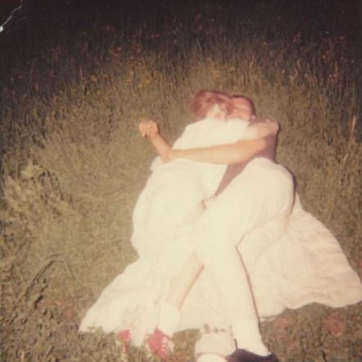

Jeff Rosenstock - We Cool?
▼
Get Old Forever
You, In Weird Cities
Novelty Sweater
Nausea
Beers Again Alone
I'm Serious, I'm Sorry
Hey Allison!
Polar Bear Or Africa
Hall Of Fame
All Blissed Out
The Lows
Darkness Records
Jeff Rosenstock - NO DREAM
▼
NO TIME
Nikes (alt)
Scram!
N O D R E A M
State Line
f a m e
Leave It in the Sun
The Beauty of Breathing
Old Crap
***BNB
Monday at the Beach
Honeymoon Ashtray
Ohio Tpke
Bomb the Music Industry! - Adults!!!: Smart!!! Shithammered!!! And Excited By Nothing!!!!!!!
▼
You Still Believe In Me?
Planning My Death
Slumlord
All Ages Shows
Big Ending
The First Time I Met Sanawon
Struggler
Will Wood and the Tapeworms - Everything Is A Lot (2020 Remaster)
▼
6up 5oh Cop-Out (Pro/Con)
Skeleton Appreciation Day in Vestal, NY (Bones)
Front Street
¡Aikido! (Neurotic/Erotic)
White Knuckle Jerk (Where Do You Get Off?)
(Cover This Song) A Little Bit Mine
Thermodynamic Lawyer, esq, G.F.D
Red Moon
Lysergide Daydream
The First Step
Jimmy Mushrooms' Last Drink: Bedtime in Wayne, NJ
Chemical Overreaction / Compound Fracture
Everything is a Lot
Video Days - sungazing

▼
35mm
Bed
Orange peel
When you loved me
School
Bleached
Sometimes
Glass beach - the first glass beach album
▼
classic j dies and goes to hell part 1
dallas
(rat castle)
planetarium
soft!!!!!!
yoshi's island
orchids
bedroom community
(forever?????????)
bone skull
neon glow
cold weather
calico
glass beach
(blood rivers)
Jeff Rosenstock - WORRY.
▼
Pietro, 60 Years Old
We Begged 2 Explode
Pash Rash
Festival Song
Staring Out the Window at Your Old Apartment
Wave Goodnight to Me
To Be a Ghost…
I Did Something Weird Last Night
Blast Damage Days
Bang on the Door
Rainbow
Planet Luxury
HELLLLHOOOOLE
June 21st
The Fuzz
…While You’re Alive
Perfect Sound Whatever


_cover.jpg)
_cover.jpg)

_cover.jpg)